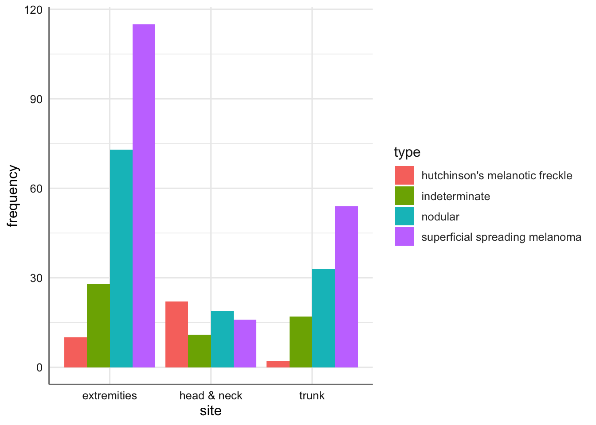
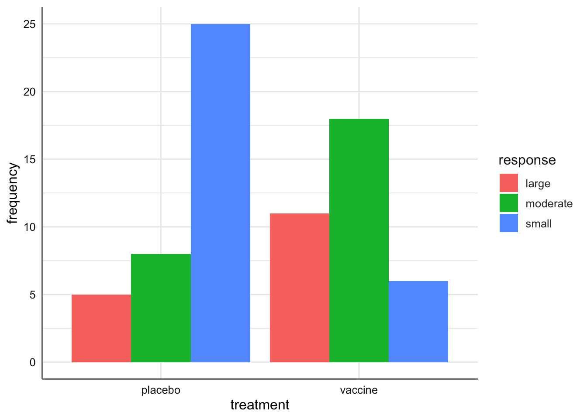
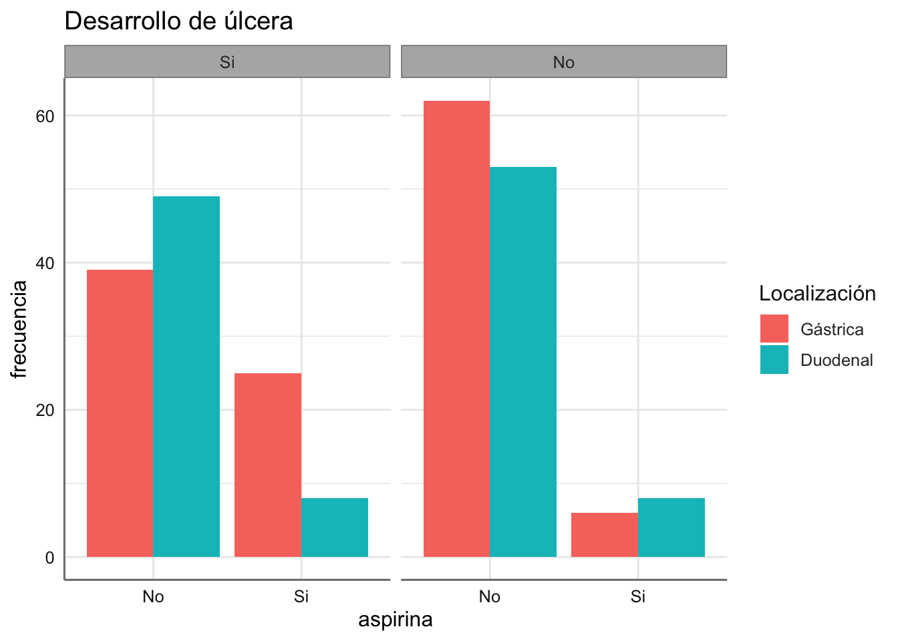
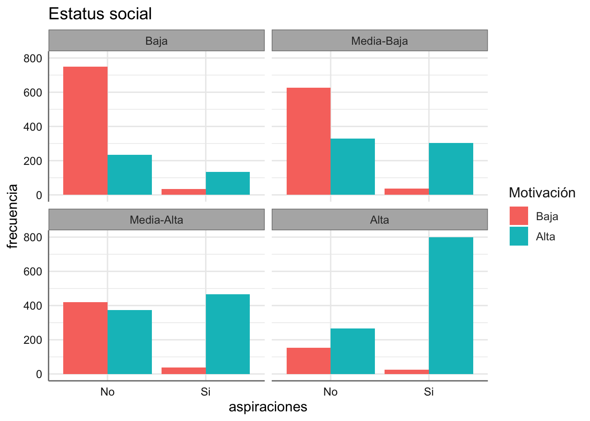
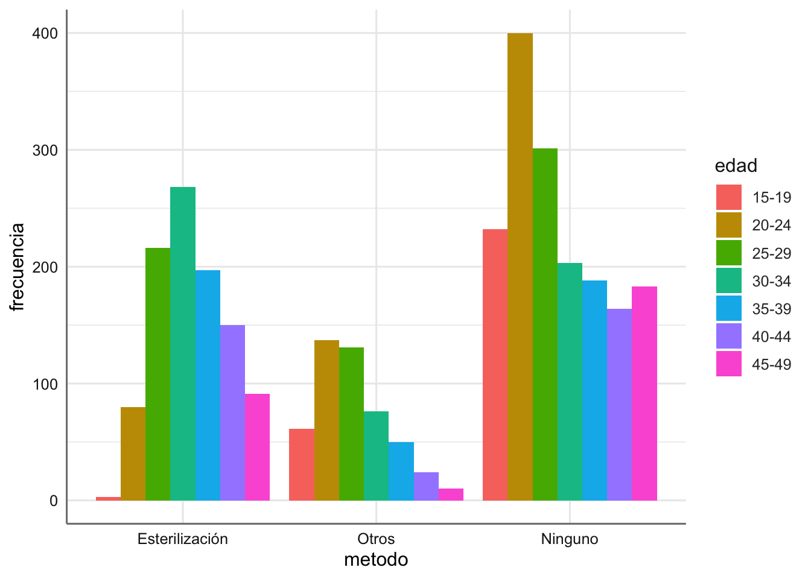
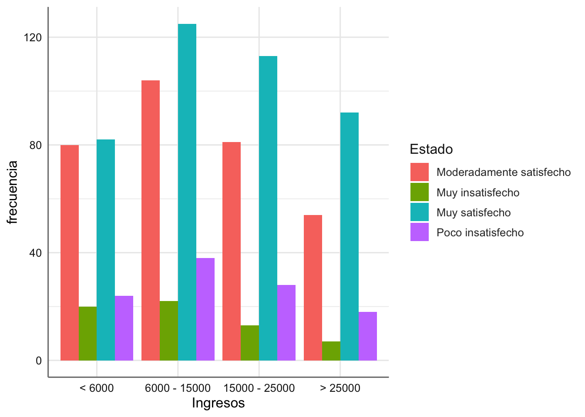

Unidad 11 Bancos de datos
A continuación se presentan diferentes ejemplos de tablas de contingencia que iremos analizando a lo largo de la unidad. Realizamos una primera aproximación gráfica a la tabla de contingencia obtenida.
11.1 Melanoma
Los datos siguientes provienen de un estudio de pacientes con una forma de cáncer de piel llamado melanoma maligno. En una muestra de 400 pacientes se recogió información sobre la localización del tumor y su tipo histológico. Los datos son el número de pacientes (frecuency) en cada combinación de tipo de tumor (type) y localización (site). El objetivo básico del análisis es investigar si determinados tipos de tumor están asociados a ciertas localizaciones. La tabla de conteos o contingencia recogida es:
| Tipo / Localización | Cabeza-Cuello | Tronco | Extremidades |
|---|---|---|---|
| Melanoma de Hutchinson | 22 | 2 | 10 |
| Melanoma Superficial | 16 | 54 | 115 |
| Nodular | 19 | 33 | 73 |
| Indeterminado | 11 | 17 | 28 |
EL código para cargar estos datos se presenta a continaución. En este caso cada línea representa una combinación de factores. También representamos los datos:
# Carga de datos
Melanoma <- read_csv("https://goo.gl/yeCXsv", col_types = "cci")
# Gráfico
ggplot(Melanoma, aes(x = site, y = frequency, fill = type)) +
stat_identity(geom = "bar", position = "dodge") 
Podemos ver claramente que hay ciertos tumores que tienen una mayor predisposición a aparecer en una parte del cuerpo que en otra.
11.2 Gripe
En un estudio prospectivo sobre una nueva vacuna para la gripe, los pacientes fueron asignados aleatoriamente a dos grupos. A los pacientes de uno de los grupos se les trató con la nueva vacuna y a los otros se les dio un placebo salino. Las respuestas fueron los niveles de anticuerpos inhibidores de hemoglutinina (HIA) encontrados en la sangre seis semanas después de la vacunación. Los datos se encuentran en el banco de datos siguiente. El objetivo del estudio es investigar el efecto de la nueva vacuna, esto es, comprobar si el hecho de dar placebo o vacuna provoca diferente respuesta HIA. Así, la variable HIA es la variable a explicar (response) en función del tipo de tratamiento (treatment) que ha recibido el paciente y las frecuencias de las celdas (frequency).
La tabla de contingencia obtenida es:
| Tratamiento / Respuesta | Pequeño | Moderado | Grande |
|---|---|---|---|
| Placebo | 25 | 8 | 5 |
| Vacuna | 6 | 18 | 11 |
Podemos cargar los datos y representarlos gráficamente
# Lectura de datos
Gripe <- read_csv("https://goo.gl/jPcz7x", col_types = "cci")
# Gráfico
ggplot(Gripe, aes(x = treatment, y = frequency, fill = response)) +
stat_identity(geom = "bar", position = "dodge") 
Se puede ver un comportamiento distinto entre el placebo y el tratamiento.
11.3 Aspirina
En un estudio retrospectivo de casos-controles, se reunió a un grupo de pacientes con úlcera y se buscó a otro grupo de individuos de similares características a los anteriores en edad, sexo y estatus socio económico, sobre los que no se sabía que tuvieran úlcera péptica. Los pacientes con úlcera fueron clasificados de acuerdo a la localización de la úlcera: gástrica o duodenal. Se les preguntó a todos si consumían aspirina. El objetivo del análisis es averiguar si existe alguna relación entre el consumo de aspirina y la existencia de algún tipo de úlcera. Si existe tal asociación, querríamos comprobar si el consumo de aspirina (aspirina) es más habitual en los pacientes con úlcera gástrica que en los de úlcera duodenal (locali). Interesa predecir el consumo de aspirina (variable a explicar) en función de si un individuo tiene úlcera o no (ulcera). y si la tiene, de qué tipo es. La variable frecuencia contiene los conteos de las combinaciones de tratamientos.
La tabla de contingencia obtenida es:
| Tipo Úlcera | Úlcera / Consumo de aspirina | No | Si |
|---|---|---|---|
| Gástrica | Si | 39 | 25 |
| No | 62 | 6 | |
| Duodenal | Si | 49 | 8 |
| No | 53 | 8 |
Podemos cargar los datos y representarlos gráficamente
# Carga de datos
locali <- gl(2, 2, 8, labels = c("Gástrica", "Duodenal"))
ulcera <- gl(2, 1, 8, labels = c("Si", "No"))
aspirina <- gl(2, 4, 8, labels = c("No", "Si"))
frecuencia <- c(39, 62, 49, 53, 25, 6, 8, 8)
Aspirina <- data.frame(locali, ulcera, aspirina, frecuencia)
# Gráfico
ggplot(Aspirina, aes(x = aspirina, y = frecuencia, fill = locali)) +
stat_identity(geom = "bar", position = "dodge") +
facet_wrap(~ ulcera) +
labs(xlab ="Consumo de aspirina",
title = "Desarrollo de úlcera", fill = "Localización")
De nuevo se observan comportamientos distintos para la combinación de los factores considerados.
11.4 Aspiraciones
En la tabla se muestran una parte de los resultados de un estudio en los Estados Unidos con el que se pretendía investigar el grado de asociación entre las aspiraciones de los estudiantes de bachillerato por proseguir con estudios universitarios (aspiraciones) y su entorno social, medido en términos del estatus socio-económico de su familia (estatus) y el hecho de que recibieron motivación en su familia para continuar estudiando (motivacion). La variable frecuencia contiene los conteos para todas las combinaciones. La tabla de contingencia original es:
| Estatus | Motivación familiar / Aspiraciones Universitarias | No | Si |
|---|---|---|---|
| Baja | Baja | 749 | 35 |
| Alta | 233 | 133 | |
| Media-Baja | Baja | 627 | 38 |
| Alta | 330 | 303 | |
| Media-Alta | Baja | 420 | 37 |
| Alta | 374 | 467 | |
| Alta | Baja | 153 | 26 |
| Alta | 266 | 800 |
Dado que Estatus y Motivación personal son factores ordinales se debe considerar su codificación como variables numéricas. A continuación se presenta la lectura del banco de datos y su representación gráfica.
estatus <- gl(4, 2, 16, labels = c("Baja", "Media-Baja",
"Media-Alta", "Alta"))
motivacion <- gl(2, 1, 16, labels = c("Baja", "Alta"))
aspiraciones <- gl(2, 8, 16, labels = c("No", "Si"))
frecuencia <- c(749, 233, 627, 330, 420, 374, 153, 266,
35, 133, 38, 303, 37, 467, 26, 800)
Aspiraciones <- data.frame(estatus, motivacion, aspiraciones, frecuencia)
# Código numérico para factores ordinales
Aspiraciones <- Aspiraciones %>%
mutate(estatus.num = as.numeric(gl(4, 2, 16)),
motivacion.num = as.numeric(gl(2, 1, 16)))
# Represenatción gráfica
ggplot(Aspiraciones, aes(x = aspiraciones, y = frecuencia, fill = motivacion)) +
stat_identity(geom = "bar", position = "dodge") +
facet_wrap(~ estatus) +
labs(xlab ="Conusmo de aspirina",
title = "Estatus social", fill = "Motivación")
¿Qué podemos comentar del gráfico obtenido?
11.5 Contraceptivos
En la tabla aparecen los datos de un estudio sobre distintos usos contraceptivos en diferentes grupos generacionales. Entendiendo la variable método contraceptivo (metodo) como variable respuesta y la variable edad (edad) como predictiva, una cuestión de interés puede ser predecir el uso anticonceptivo de una mujer en función de su edad. La variable frecuencia contiene los conteos para todas las combinaciones.
| Edad / Método contraceptivo | Esterilización | Otros | Ninguno |
|---|---|---|---|
| 15-19 | 3 | 61 | 232 |
| 20-24 | 80 | 137 | 400 |
| 25-29 | 216 | 131 | 301 |
| 30-34 | 268 | 76 | 203 |
| 35-39 | 197 | 50 | 188 |
| 40-44 | 150 | 24 | 164 |
| 45-49 | 91 | 10 | 183 |
El código de lectura de datos (incluyendo la codificación del factor ordinal como el punto medio del intervalo) y el gráfico se muestran a continuación:
edad <- gl(7, 1, 21, labels = c("15-19", "20-24", "25-29",
"30-34", "35-39", "40-44", "45-49"))
metodo <- gl(3, 7, 21, labels = c ("Esterilización", "Otros", "Ninguno"))
frecuencia <- c(3, 80, 216, 268, 197, 150, 91, 61, 137, 131, 76,
50, 24, 10, 232, 400, 301, 203, 188, 164, 183)
Contraceptivos <- data.frame(edad, metodo, frecuencia)
# Código numérico para factor ordinales
Contraceptivos <- Contraceptivos %>%
mutate(edad.num = rep(c(17, 22, 27, 32, 37, 42, 47),3))
# Gráfico
ggplot(Contraceptivos, aes(x = metodo, y = frecuencia, fill = edad)) +
stat_identity(geom = "bar", position = "dodge") 
¿Qué conclusiones podemos obtener de este gráfico?
11.6 Satisfacción laboral
Los datos que se presentan corresponden a un estudio en el que se pretendía concluir sobre la relación entre el grado de satisfacción en el trabajo (Estado) y los ingresos percibidos (Ingresos). El objetivo es predecir el grado de satisfacción en el trabajo en función de los ingresos percibidos (en dólares). Construimos la variable frecuencia que contiene los conteos para todas las combinaciones.
| Ingresos / Satisfacción | Muy Insatisfecho | Poco Insatisfecho | Moderadamente Satisfecho | Muy Satisfecho |
|---|---|---|---|---|
| < 6000 | 20 | 24 | 80 | 82 |
| 6000 - 15000 | 22 | 38 | 104 | 125 |
| 15000 - 25000 | 13 | 28 | 81 | 113 |
| > 25000 | 7 | 18 | 54 | 92 |
Cargamos los datos que vienen en formato de tabla, con lo que es necesario transformarlos adecuadamente. También se calculan las variables numéricas asociadas con los factores ordinales.
Satisfaccion <- read_csv("https://goo.gl/5T0nh0", col_types = "ciiii")
# Construimos la tabla donde cada fila recoge la frecuencia observada para combinación de las variables
Satisfaccion <- Satisfaccion %>%
gather(`Muy insatisfecho`, `Poco insatisfecho`,
`Moderadamente satisfecho`, `Muy satisfecho`,
key = "Estado", value = frecuencia)
# Código numérico para factores ordinales
Satisfaccion <- Satisfaccion %>%
mutate(Ingresos.num = as.numeric(gl(4, 1, 16)),
Estado.num = as.numeric(gl(4, 4, 16)))
# Gráfico
# Creamos un vector con el orden predefinido
ords <- c("< 6000", "6000 - 15000", "15000 - 25000", "> 25000")
ggplot(Satisfaccion, aes(x = Ingresos, y = frecuencia, fill = Estado)) +
stat_identity(geom = "bar", position = "dodge") +
scale_x_discrete(limits = ords)
¿Qué conclusiones podemos obtener de este gráfico?
Dobson, A. 2002. An Introduction to Generalized Linear Models. CRC Press.